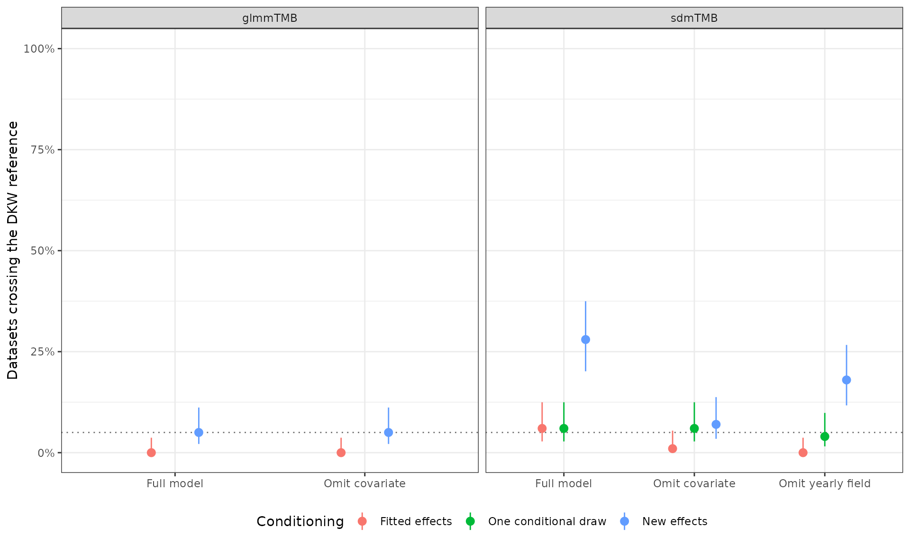
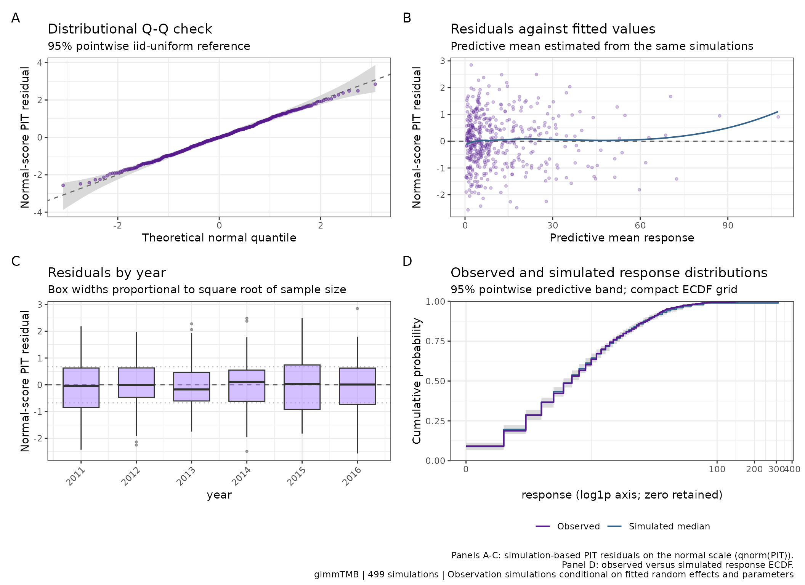
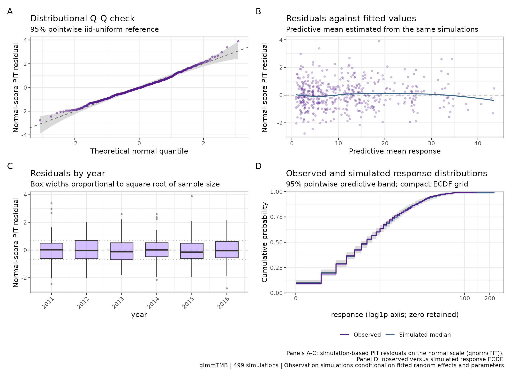
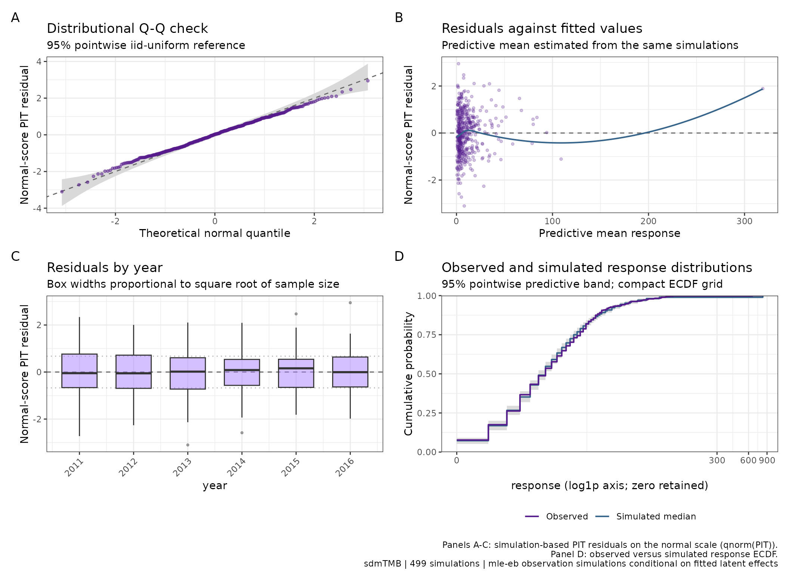
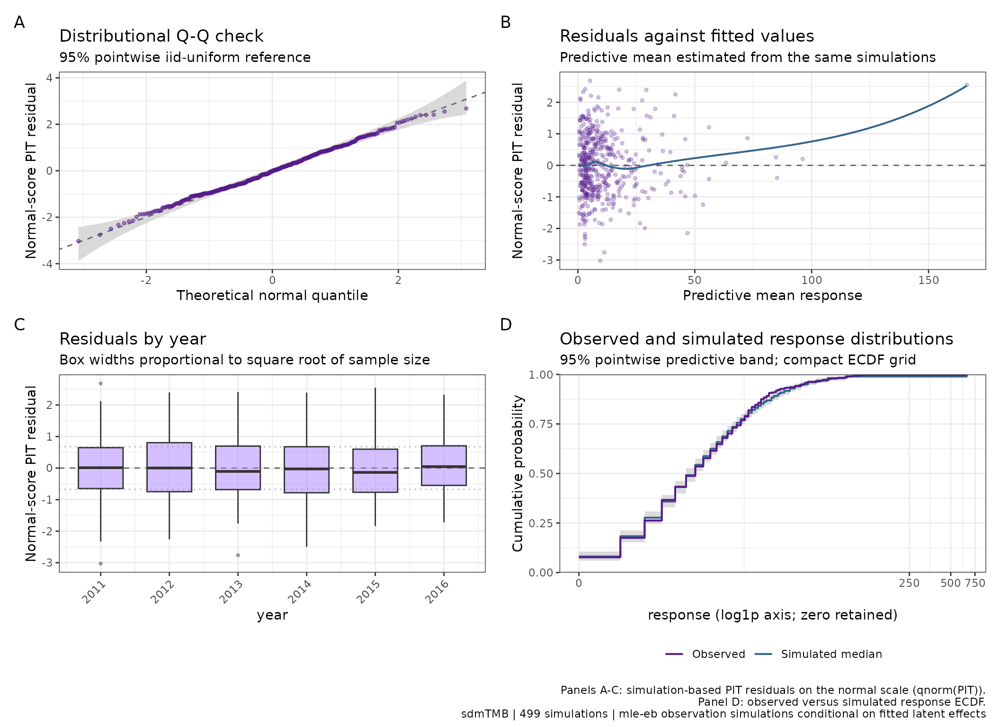
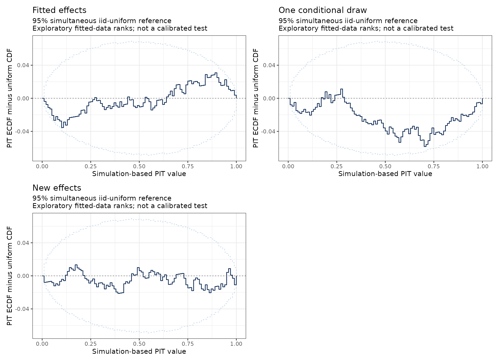

What this study can establish
This is the first, deliberately bounded N09 validation increment. We simulate data from known negative-binomial mixed and spatial models, fit both correctly specified and deliberately incomplete candidates, and examine how the existing residual diagnostics behave. It is a study of operating characteristics, not just a check that plotting functions run.
There are three separate questions:
- Do the PIT calculations behave sensibly when the generating distribution is known, before any parameters have been estimated?
- How do parameter fitting and the choice of latent-effect conditioning change the diagnostics?
- Which checks reveal deliberately omitted structure, and which can miss it?
No calculation, conditioning default, or default panel has been changed by this study. The conclusions below apply to these designs, not to every CPUE family or model. The residual article remains the guide to everyday usage. Randomised quantile residuals provide the underlying distributional idea (Dunn and Smyth 1996); fitted mixed-model diagnostics require care over their conditioning and interpretation (Waagepetersen 2006).
Fixed design and predictive targets
Each backend uses 100 independent datasets, with 480 observations over six years. New latent effects and responses are generated for each dataset, while the sampling design is held fixed. The response is a simulated count per standardised sampling unit: it could represent CPUE, not necessarily total catch. Both models use a log link and NB2 conditional variance .
| Backend | Generating structure | Fitted candidates |
|---|---|---|
| glmmTMB | Year, a continuous covariate, and 20 vessel random intercepts; four observations per vessel/year | Full model; omit the covariate |
| sdmTMB | Year, the same type of covariate, a persistent spatial field, and an independent yearly spatial field; 80 stations | Full model; omit the covariate; omit the yearly field |
The covariate distribution shifts gradually through time. The spatial
case uses a fixed 25-knot mesh in a 100 by 100 coordinate domain, range
30, spatial SD 0.45, and yearly-field SD 0.6. The same mesh generates
and fits the data; this is not a study of mesh
approximation error. Data generation uses the native simulate_new()
interface, with explicit known parameters, not a bootstrap from an
estimated model. The implementations are described by Brooks et al. (2017) and Anderson et al. (2025).
Every candidate is fitted once by maximum likelihood. There are no replacement datasets or hidden convergence retries. The production study uses 499 response simulations per diagnostic, batches of 50, and a 100-point response ECDF grid. Three separate pilot datasets per backend checked execution and timing; they do not appear in any results below.
conditioning |
Quantity held fixed or resimulated | Backends in this study |
|---|---|---|
"fitted" |
Hold estimated latent effects at their fitted values; simulate new responses | Both |
"conditional_draw" |
Hold non-latent parameters fixed; draw one joint approximate conditional latent-effect vector and share it across all response simulations | sdmTMB |
"new_effects" |
Hold estimated non-latent parameters fixed; simulate new latent effects and responses in each replicate | Both |
The existing defaults are "new_effects" for glmmTMB and
"fitted" for sdmTMB. A single conditional draw is
not a posterior predictive calculation integrated over
many latent draws. These schemes ask different questions; a plot that
looks closer to its reference is not, by itself, a reason to select one.
Native sdmTMB conditioning is documented in simulate.sdmTMB().
Fit eligibility and failures
A fit is eligible when its optimiser reports convergence, its reported Hessian is positive definite, and its log likelihood is finite. Gradients and warnings are recorded separately, not used as an undisclosed exclusion rule. The following denominators include every attempted fit. Diagnostic summaries use eligible fits only; their usable counts are shown below.
fit_table <- study$fit_summary
fit_table$scenario <- scenario_labels[fit_table$scenario]
fit_table$largest_gradient <- format(fit_table$largest_gradient, scientific = TRUE, digits = 3)
knitr::kable(fit_table[, c("backend", "scenario", "attempted", "eligible", "warnings", "errors", "largest_gradient")],
col.names = c("Backend", "Candidate", "Attempted", "Eligible", "Warnings", "Errors", "Largest gradient"), digits = 4)| Backend | Candidate | Attempted | Eligible | Warnings | Errors | Largest gradient | |
|---|---|---|---|---|---|---|---|
| glmmTMB.full | glmmTMB | Full model | 100 | 100 | 0 | 0 | 1.05e-02 |
| glmmTMB.omit_x | glmmTMB | Omit covariate | 100 | 100 | 0 | 0 | 3.39e-03 |
| sdmTMB.full | sdmTMB | Full model | 100 | 100 | 0 | 0 | 2.78e-07 |
| sdmTMB.omit_st | sdmTMB | Omit yearly field | 100 | 100 | 0 | 0 | 2.07e-05 |
| sdmTMB.omit_x | sdmTMB | Omit covariate | 100 | 100 | 0 | 0 | 1.62e-07 |
All 500 attempted fits were eligible, and all 1,960 diagnostic/control records completed without captured warnings or errors. The largest recorded glmmTMB gradient was approximately 0.0105; gradients were reported, not used to change the pre-specified eligibility rule. An eligible fit is not proof of an adequate model or a perfectly estimated latent covariance. Fit-status details, including excluded attempts, are retained in the downloadable results object.
First check the reference itself
Before interpreting any fitted-model results, an independent-uniform
control found a grid-alignment problem in bayesplot
1.16.0, the optional plotting dependency used by influ2’s PIT
ECDF panels. Its last 100 reference limits are calculated for
1:100 / 100, but are displayed at
seq(0, 1, length.out = 100). The empirical curve and the
limits consequently refer to different horizontal positions. This
finding concerns that installed version and method, not the underlying
theory of simultaneous ECDF bands (Säilynoja et al. 2022).
The control uses 10,000 independent samples of 480 uniform values. Crossing means that at least one empirical-CDF value lies outside the reference limits. This table is the frozen original audit, including the pre-correction display. The current plotting correction is described immediately below it.
audit <- study$band_audit
audit$Reference <- c(displayed = "bayesplot 1.16.0, as displayed",
aligned = "Same limits at their own grid", dkw = "Independent DKW bound")[audit$method]
audit$Crossing <- percent(audit$rate)
audit$Interval <- paste(percent(audit$lower), "to", percent(audit$upper))
knitr::kable(audit[, c("Reference", "n", "Crossing", "Interval")],
col.names = c("Reference", "Samples", "Crossing rate", "95% Monte Carlo interval"))| Reference | Samples | Crossing rate | 95% Monte Carlo interval |
|---|---|---|---|
| bayesplot 1.16.0, as displayed | 10000 | 12.5% | 11.8% to 13.1% |
| Same limits at their own grid | 10000 | 4.8% | 4.4% to 5.2% |
| Independent DKW bound | 10000 | 4.7% | 4.3% to 5.1% |
The original displayed limit crossing rate was 12.5%, not
approximately 5%. Follow-up correction, 12 September
2026: influ2 now aligns bayesplot’s unchanged limits and the
empirical CDF on (0:K) / K, including the exact
zero-endpoint limits. Both PIT plots use that grid, and the difference
plot subtracts it from every curve. Repeating the same control through
the corrected public plotting function gives 477 crossings in 10,000
samples (4.77%), matching the original aligned audit. The separate follow-up
script reproduces this without model fits or changes to the frozen
artefact.
Stored PIT values, the normal-score Q-Q calculation, response ECDF,
and default panels are unchanged. Even correctly aligned
independent-uniform limits are not calibrated 5% thresholds for
fitted-model residuals. The archived
displayed_band_crossing metrics deliberately retain the
original display; they have not been relabelled or recomputed using the
corrected plot.
For the main study we therefore use an independent summary: the exact maximum distance of the empirical PIT CDF from uniformity, . We record whether it exceeds the 95% Dvoretzky–Kiefer–Wolfowitz (DKW) bound (Massart 1990). This controls crossing probability under independent uniform values, but it is not a calibrated hypothesis test for fitted-model residuals. There is no fitted-model p-value or automatic pass/fail model selection here.
Known-truth controls
For each generated dataset, two controls use the actual conditional mean, realised latent effects, and NB2 size:
- The analytic randomised PIT is , with an independent uniform randomiser.
- The finite-simulation control generates 499 independent response
replicates from that same known distribution and uses
as_influ_residuals().
Neither control estimates a model. Their comparison isolates
finite-rank behaviour from parameter fitting. Normal scores remain
qnorm(pit); Pearson residuals are not used.
oracle <- study$summary[study$summary$scenario == "oracle", ]
oracle$Control <- scheme_labels[oracle$conditioning]
oracle$Interval <- paste(percent(oracle$lower), "to", percent(oracle$upper))
knitr::kable(oracle[, c("backend", "Control", "usable", "crossings", "Interval", "residual_sd")],
col.names = c("Backend", "Control", "Datasets", "Crossings", "95% Monte Carlo interval", "Mean residual SD"), digits = 3)| Backend | Control | Datasets | Crossings | 95% Monte Carlo interval | Mean residual SD | |
|---|---|---|---|---|---|---|
| glmmTMB.oracle.analytic_truth | glmmTMB | Known truth: analytic | 100 | 4 | 1.6% to 9.8% | 0.999 |
| glmmTMB.oracle.finite_truth | glmmTMB | Known truth: 499 simulations | 100 | 2 | 0.6% to 7.0% | 0.999 |
| sdmTMB.oracle.analytic_truth | sdmTMB | Known truth: analytic | 100 | 4 | 1.6% to 9.8% | 1.002 |
| sdmTMB.oracle.finite_truth | sdmTMB | Known truth: 499 simulations | 100 | 4 | 1.6% to 9.8% | 1.002 |
With only 100 datasets per backend, small differences between these controls are Monte Carlo variation, not evidence of equivalence or a preferred count. The larger independent-uniform audit checks the reference separately.
Fitting and conditioning change the picture
The full glmmTMB model crossed the DKW reference in 0/100 datasets with fitted effects and 5/100 with new effects. The full sdmTMB model crossed in 6/100 with fitted effects, 6/100 with one conditional draw, and 28/100 with new fields. The last result is not evidence that the correctly specified spatial model is wrong: the iid reference does not account for the residual dependence under that predictive target.
The following rates use 499 simulations and the primary seed. Error bars are Wilson 95% Monte Carlo intervals over independently generated datasets, not uncertainty intervals around the CPUE index. Repeated seed/count runs do not increase these denominators.
rates <- labels_for(study$summary[study$summary$scenario != "oracle", ])
ggplot(rates, aes(Model, rate, colour = Scheme)) +
geom_hline(yintercept = .05, linetype = 3, colour = "grey45") +
geom_pointrange(aes(ymin = lower, ymax = upper),
position = position_dodge(width = .5)) +
facet_wrap(~ backend, scales = "free_x") +
scale_y_continuous(limits = c(0, 1), labels = function(x) paste0(100 * x, "%")) +
labs(x = NULL, y = "Datasets crossing the DKW reference", colour = "Conditioning") +
theme(legend.position = "bottom")
Crossing of the independent-uniform DKW reference across 100 generated datasets per backend, conditional on fit eligibility. Points show crossing rates and bars show Wilson 95% Monte Carlo intervals; the dotted line marks 5%. Colours distinguish latent-effect conditioning. These rates describe this simulation design and are not calibrated fitted-model rejection probabilities. The known-truth controls are tabulated separately.
rates$Interval <- paste(percent(rates$lower), "to", percent(rates$upper))
knitr::kable(rates[, c("backend", "Model", "Scheme", "usable", "crossings", "Interval")],
col.names = c("Backend", "Candidate", "Conditioning", "Usable", "Crossings", "95% Monte Carlo interval"))| Backend | Candidate | Conditioning | Usable | Crossings | 95% Monte Carlo interval | |
|---|---|---|---|---|---|---|
| glmmTMB.full.fitted | glmmTMB | Full model | Fitted effects | 100 | 0 | 0.0% to 3.7% |
| glmmTMB.full.new_effects | glmmTMB | Full model | New effects | 100 | 5 | 2.2% to 11.2% |
| glmmTMB.omit_x.fitted | glmmTMB | Omit covariate | Fitted effects | 100 | 0 | 0.0% to 3.7% |
| glmmTMB.omit_x.new_effects | glmmTMB | Omit covariate | New effects | 100 | 5 | 2.2% to 11.2% |
| sdmTMB.full.conditional_draw | sdmTMB | Full model | One conditional draw | 100 | 6 | 2.8% to 12.5% |
| sdmTMB.full.fitted | sdmTMB | Full model | Fitted effects | 100 | 6 | 2.8% to 12.5% |
| sdmTMB.full.new_effects | sdmTMB | Full model | New effects | 100 | 28 | 20.1% to 37.5% |
| sdmTMB.omit_st.conditional_draw | sdmTMB | Omit yearly field | One conditional draw | 100 | 4 | 1.6% to 9.8% |
| sdmTMB.omit_st.fitted | sdmTMB | Omit yearly field | Fitted effects | 100 | 0 | 0.0% to 3.7% |
| sdmTMB.omit_st.new_effects | sdmTMB | Omit yearly field | New effects | 100 | 18 | 11.7% to 26.7% |
| sdmTMB.omit_x.conditional_draw | sdmTMB | Omit covariate | One conditional draw | 100 | 6 | 2.8% to 12.5% |
| sdmTMB.omit_x.fitted | sdmTMB | Omit covariate | Fitted effects | 100 | 1 | 0.2% to 5.4% |
| sdmTMB.omit_x.new_effects | sdmTMB | Omit covariate | New effects | 100 | 7 | 3.4% to 13.7% |
Structure can remain when the marginal distribution looks plausible
Distributional agreement alone is insufficient. We also record residual association with the known omitted covariate, and a descriptive spatial neighbour score. The latter uses a symmetric four-nearest-neighbour graph within each year and residuals centred within year. It is not a new public diagnostic function or a calibrated spatial test. It provides a known-design check for spatial pattern that a pooled histogram or Q-Q plot can miss.
structure_table <- rates[, c("backend", "Model", "Scheme", "residual_sd", "covariate_spearman", "spatial_score")]
knitr::kable(structure_table,
col.names = c("Backend", "Candidate", "Conditioning", "Mean residual SD", "Mean correlation with covariate", "Mean neighbour score"), digits = 3)| Backend | Candidate | Conditioning | Mean residual SD | Mean correlation with covariate | Mean neighbour score | |
|---|---|---|---|---|---|---|
| glmmTMB.full.fitted | glmmTMB | Full model | Fitted effects | 0.981 | -0.001 | NA |
| glmmTMB.full.new_effects | glmmTMB | Full model | New effects | 1.003 | 0.000 | NA |
| glmmTMB.omit_x.fitted | glmmTMB | Omit covariate | Fitted effects | 0.972 | 0.613 | NA |
| glmmTMB.omit_x.new_effects | glmmTMB | Omit covariate | New effects | 0.980 | 0.518 | NA |
| sdmTMB.full.conditional_draw | sdmTMB | Full model | One conditional draw | 1.004 | 0.005 | -0.006 |
| sdmTMB.full.fitted | sdmTMB | Full model | Fitted effects | 0.906 | -0.002 | -0.105 |
| sdmTMB.full.new_effects | sdmTMB | Full model | New effects | 0.993 | 0.008 | 0.294 |
| sdmTMB.omit_st.conditional_draw | sdmTMB | Omit yearly field | One conditional draw | 0.995 | -0.002 | 0.199 |
| sdmTMB.omit_st.fitted | sdmTMB | Omit yearly field | Fitted effects | 0.974 | -0.004 | 0.190 |
| sdmTMB.omit_st.new_effects | sdmTMB | Omit yearly field | New effects | 0.977 | 0.003 | 0.296 |
| sdmTMB.omit_x.conditional_draw | sdmTMB | Omit covariate | One conditional draw | 0.999 | 0.565 | -0.025 |
| sdmTMB.omit_x.fitted | sdmTMB | Omit covariate | Fitted effects | 0.926 | 0.607 | -0.095 |
| sdmTMB.omit_x.new_effects | sdmTMB | Omit covariate | New effects | 0.984 | 0.551 | 0.164 |
Residual SD is on the standard-normal scale. Correlations are Spearman correlations within datasets, then averaged. A missing neighbour score for glmmTMB means that no spatial graph was specified, not that spatial independence was established. Full replicate-level results additionally include fitted-mean association, year-mean variation, and the fractions of Q-Q points and response-grid points outside their pointwise intervals. Those fractions are descriptive: points within a plot are not independent replicates.
Two failures of a distribution-only interpretation are particularly clear:
- Omitting the generating covariate leaves substantial residual association with it: mean Spearman correlation is about 0.61 for fitted-effect glmmTMB diagnostics and 0.61 for fitted-effect sdmTMB diagnostics. Yet their DKW crossing counts are only 0/100 and 1/100, respectively. Re-estimating the remaining parameters can produce a plausible pooled residual distribution without removing the omitted covariate pattern.
- Omitting the yearly spatial field gives 0/100 DKW crossings under fitted sdmTMB conditioning, but the mean within-year neighbour score is about 0.19. Spatial pattern remains despite the reassuring marginal distribution.
For the full sdmTMB model, fitted-effect normal scores have mean SD 0.906, compared with 1.004 for the single conditional-draw scheme. The neighbour scores also differ. This supports treating conditioning as an explicit scientific choice, not declaring the method with the most normal-looking scores universally preferable.
Worked plots without refitting
The figures use the first dataset with all planned comparisons eligible: glmmTMB replicate 1 and sdmTMB replicate 1. Selection was fixed in advance and did not depend on how striking the plots looked. The multi-dataset results above carry more evidence than these individual illustrations.
validation <- readRDS(system.file("extdata", "n09-validation.rds", package = "influ2"))
mixed <- validation$examples$glmmTMB$checks
spatial <- validation$examples$sdmTMB$checksglmmTMB: retain or omit the covariate
Both plots use fitted effects to make the conditional-response comparison explicit; this is an example choice, not a change to the glmmTMB default. They use the same observations and primary seed. Fitted-year effects can make year-wise centres look reassuring even when a covariate is omitted.
plot(mixed[["full:fitted"]], response_scale = "log1p")
Existing four-panel diagnostic for the correctly specified glmmTMB model in the pre-selected example dataset, holding fitted vessel effects fixed. Q-Q, fitted-value, and year panels use normal-score PIT residuals. The Q-Q ribbon is a pointwise independent-uniform reference; the response ECDF ribbon is a pointwise predictive band. Neither supplies a calibrated fitted-model pass/fail test.
plot(mixed[["omit_x:fitted"]], response_scale = "log1p")
The same glmmTMB observations and fitted-effect conditioning after omitting the generating covariate. Other parameters, including negative-binomial dispersion, are re-estimated once in this incomplete candidate. A plausible marginal residual distribution does not establish that covariate-related structure has disappeared; the repeated-study correlation summary checks that separately.
sdmTMB: retain or omit the yearly spatial field
Here fitted-effect conditioning is the existing sdmTMB default. The full model can use fitted fields to explain local variation, whereas the incomplete candidate has no yearly field. Neither four-panel plot is a residual map; the neighbour summary above checks an additional spatial question.
plot(spatial[["full:fitted"]], response_scale = "log1p")
Existing four-panel diagnostic for the correctly specified sdmTMB model in the pre-selected spatial dataset, holding fitted persistent and yearly spatial effects fixed. The normal-score PIT and response-distribution panels are conditional model checks. Their nominal reference bands do not account automatically for estimating latent effects from these same observations.
plot(spatial[["omit_st:fitted"]], response_scale = "log1p")
The same sdmTMB observations after omitting the yearly spatial field, retaining the fixed covariate and persistent spatial field. Fitted-effect conditioning is used again. The marginal panels and the separate within-year neighbour score address different aspects of this deliberate misspecification; absence of a strong Q-Q departure is not evidence that the omitted field is unnecessary.
The same PIT values on a uniform scale
The optional plots below reuse the saved full-model sdmTMB PIT values. They make the conditioning contrast visible without running the models again. The bands are calculated by the locally installed bayesplot and aligned by influ2 as described above. These figures use the corrected plotting code; the numerical study and its original crossing metrics remain frozen to their recorded versions.
patchwork::wrap_plots(
plot(spatial[["full:fitted"]], type = "pit_ecdf_diff") + labs(title = "Fitted effects"),
plot(spatial[["full:conditional_draw"]], type = "pit_ecdf_diff") + labs(title = "One conditional draw"),
plot(spatial[["full:new_effects"]], type = "pit_ecdf_diff") + labs(title = "New effects"),
ncol = 2
)
PIT ECDF difference displays for the same full sdmTMB fit: fitted effects (upper left), one shared conditional latent draw (upper right), and new effects (lower left). Curves reuse stored PIT values; zero is the uniform reference. Pale limits are bayesplot’s independent-uniform simultaneous limits, with their evaluation grid corrected by influ2. The original study metrics remain frozen. Do not read crossings as calibrated rejection decisions. No new response simulations or model fits are performed.
Seed and simulation-count sensitivity
For dataset IDs 1–10 only, we repeat each eligible diagnostic with a second seed at 499 simulations and with the primary seed at 1,999 simulations. Models are not refitted. A conditional-draw seed also changes the one shared latent vector, so its sensitivity is not solely finite response-simulation noise. More response simulations do not average over that single latent draw.
sensitivity <- labels_for(study$sensitivity)
sensitivity$Change <- ifelse(sensitivity$variant == "second_seed", "Second seed, 499", "Same seed, 1,999")
knitr::kable(sensitivity[, c("backend", "Model", "Scheme", "Change", "paired", "flag_changes", "mean_absolute_distance_change")],
col.names = c("Backend", "Candidate", "Conditioning", "Rerun", "Pairs", "Crossing changes", "Mean absolute change in D"), digits = 4)| Backend | Candidate | Conditioning | Rerun | Pairs | Crossing changes | Mean absolute change in D | |
|---|---|---|---|---|---|---|---|
| glmmTMB.full.fitted.more_simulations | glmmTMB | Full model | Fitted effects | Same seed, 1,999 | 10 | 0 | 0.0056 |
| glmmTMB.full.fitted.second_seed | glmmTMB | Full model | Fitted effects | Second seed, 499 | 10 | 0 | 0.0060 |
| glmmTMB.full.new_effects.more_simulations | glmmTMB | Full model | New effects | Same seed, 1,999 | 10 | 0 | 0.0027 |
| glmmTMB.full.new_effects.second_seed | glmmTMB | Full model | New effects | Second seed, 499 | 10 | 0 | 0.0047 |
| glmmTMB.omit_x.fitted.more_simulations | glmmTMB | Omit covariate | Fitted effects | Same seed, 1,999 | 10 | 0 | 0.0034 |
| glmmTMB.omit_x.fitted.second_seed | glmmTMB | Omit covariate | Fitted effects | Second seed, 499 | 10 | 0 | 0.0055 |
| glmmTMB.omit_x.new_effects.more_simulations | glmmTMB | Omit covariate | New effects | Same seed, 1,999 | 10 | 0 | 0.0018 |
| glmmTMB.omit_x.new_effects.second_seed | glmmTMB | Omit covariate | New effects | Second seed, 499 | 10 | 0 | 0.0031 |
| sdmTMB.full.conditional_draw.more_simulations | sdmTMB | Full model | One conditional draw | Same seed, 1,999 | 10 | 0 | 0.0046 |
| sdmTMB.full.conditional_draw.second_seed | sdmTMB | Full model | One conditional draw | Second seed, 499 | 10 | 1 | 0.0168 |
| sdmTMB.full.fitted.more_simulations | sdmTMB | Full model | Fitted effects | Same seed, 1,999 | 10 | 0 | 0.0020 |
| sdmTMB.full.fitted.second_seed | sdmTMB | Full model | Fitted effects | Second seed, 499 | 10 | 0 | 0.0039 |
| sdmTMB.full.new_effects.more_simulations | sdmTMB | Full model | New effects | Same seed, 1,999 | 10 | 0 | 0.0032 |
| sdmTMB.full.new_effects.second_seed | sdmTMB | Full model | New effects | Second seed, 499 | 10 | 0 | 0.0052 |
| sdmTMB.omit_st.conditional_draw.more_simulations | sdmTMB | Omit yearly field | One conditional draw | Same seed, 1,999 | 10 | 0 | 0.0034 |
| sdmTMB.omit_st.conditional_draw.second_seed | sdmTMB | Omit yearly field | One conditional draw | Second seed, 499 | 10 | 0 | 0.0111 |
| sdmTMB.omit_st.fitted.more_simulations | sdmTMB | Omit yearly field | Fitted effects | Same seed, 1,999 | 10 | 0 | 0.0036 |
| sdmTMB.omit_st.fitted.second_seed | sdmTMB | Omit yearly field | Fitted effects | Second seed, 499 | 10 | 0 | 0.0056 |
| sdmTMB.omit_st.new_effects.more_simulations | sdmTMB | Omit yearly field | New effects | Same seed, 1,999 | 10 | 1 | 0.0024 |
| sdmTMB.omit_st.new_effects.second_seed | sdmTMB | Omit yearly field | New effects | Second seed, 499 | 10 | 1 | 0.0057 |
| sdmTMB.omit_x.conditional_draw.more_simulations | sdmTMB | Omit covariate | One conditional draw | Same seed, 1,999 | 10 | 0 | 0.0032 |
| sdmTMB.omit_x.conditional_draw.second_seed | sdmTMB | Omit covariate | One conditional draw | Second seed, 499 | 10 | 1 | 0.0113 |
| sdmTMB.omit_x.fitted.more_simulations | sdmTMB | Omit covariate | Fitted effects | Same seed, 1,999 | 10 | 0 | 0.0030 |
| sdmTMB.omit_x.fitted.second_seed | sdmTMB | Omit covariate | Fitted effects | Second seed, 499 | 10 | 0 | 0.0048 |
| sdmTMB.omit_x.new_effects.more_simulations | sdmTMB | Omit covariate | New effects | Same seed, 1,999 | 10 | 1 | 0.0042 |
| sdmTMB.omit_x.new_effects.second_seed | sdmTMB | Omit covariate | New effects | Second seed, 499 | 10 | 0 | 0.0048 |
These ten paired datasets are a sensitivity screen, not an estimate precise enough to recommend a universal simulation count. Near a reference boundary, changing a binary crossing flag can exaggerate a small numerical change; read the continuous distance alongside the count. The defaults remain unchanged.
Across the 40 paired glmmTMB comparisons per sensitivity variant, no DKW flags changed. Across the 90 sdmTMB comparisons, three changed with the second seed and two with 1,999 simulations. Those counts pool different scenarios and schemes and are descriptive only; the disaggregated table is the primary sensitivity record.
Interpretation and the next review
This first increment separates three sources of behaviour: finite-simulation ranks, estimating a model from the checked observations, and the predictive target defined by conditioning. They should not be combined into a single claim that a backend’s residuals are either “valid” or “invalid”.
Review the following with Nicholas before changing statistical defaults:
- Keep the now-corrected reference-band display separate from the remaining question of fitted-model residual calibration.
- Decide which scientific question each conditioning scheme should answer, using the full-model and omitted-structure results together. Do not pick a default simply because its Q-Q curve looks closest to normal.
- Decide whether a later increment needs calibrated fitted-model envelopes, repeated refitting, or held-out prediction checks. None is provided here.
- Identify the next genuinely different design to validate, rather than extending these conclusions to all six backends or all response families.
Limitations include one family, one sample size, one fixed design and spatial mesh, balanced yearly effort, modest replication, and diagnostics evaluated on the fitting observations. There are no brms, tinyVAST, hurdle/delta, sparse sampling, range-boundary, or out-of-sample validation claims. In particular, the default four panels do not replace a spatial residual investigation.
Reproduction and compact results
The fixed protocol and developer scripts contain the data generator, seed schedule, metrics, timing pilot, and report builder. From a checkout with the recorded optional dependencies installed:
Rscript --vanilla tools/n09/test-study.R
Rscript --vanilla tools/n09/run.R production /absolute/new/output-directory
Rscript --vanilla tools/n09/report.R /absolute/new/output-directoryUse one BLAS/OpenMP thread for the recorded timing setup. Each
dataset is checkpointed; resuming requires identical configuration and
source hashes. The report refuses incomplete production runs. It writes
replicate-level CSV files to the output directory and the compact RDS
used here to inst/extdata/. The source commit records the
package implementation baseline; separate hashes identify the study
scripts and protocol, which were added by this increment.
knitr::kable(data.frame(Package = names(study$metadata$package_versions),
Version = unname(study$metadata$package_versions)))| Package | Version |
|---|---|
| influ2 | 1.1.0 |
| glmmTMB | 1.1.14 |
| sdmTMB | 1.1.0 |
| TMB | 1.9.25 |
| Matrix | 1.7.6 |
| bayesplot | 1.16.0 |
| ggplot2 | 4.0.3 |
The installed artefact contains all attempted-fit statuses, successful and failed diagnostic attempts, seeds, versions, source hashes, summaries, and the two selected sets of compact diagnostic objects. It contains no fitted models or observation-by-simulation matrices. Its compressed size is 257 KiB. The article and ordinary package tests read these results; CRAN and CI do not rerun the Monte Carlo study. Rebuilding this article is not evidence that the study was rerun under newer dependency versions.